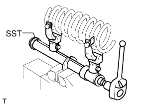
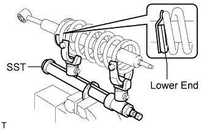
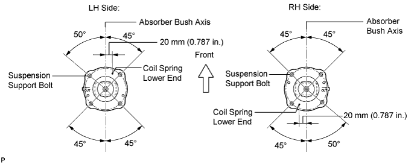

FRONT SHOCK ABSORBER > REASSEMBLY |
| 1. INSTALL FRONT COIL SPRING LH |
 |
Using SST, compress the coil spring.
 |
Install the coil spring to the shock absorber.
| 2. INSTALL FRONT SUSPENSION SUPPORT SUB-ASSEMBLY LH |
Install the 2 cushions, 2 retainers and suspension support to the piston rod.
Temporarily install a new front shock absorber nut to the suspension support.
Position the suspension support as shown in the illustration.

Remove SST.
| 3. TIGHTEN FRONT SUPPORT TO FRONT SHOCK ABSORBER NUT |
Tighten the nut.